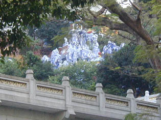
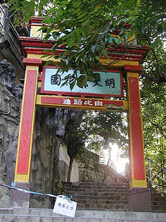
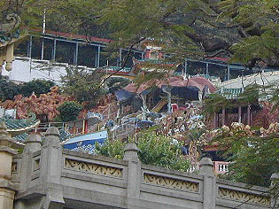
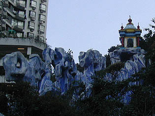
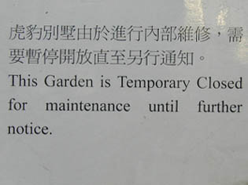
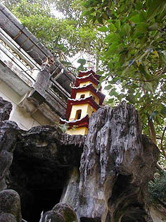

胡文虎花園（タイガーバームガーデン）
AwBoonHowGarden(TigerBarm Garden)
香港珍寺遊戯いよいよ最後の遊戯である。
最初に述べた通り、我が珍寺道開眼の聖地（恐山じゃなかったのか！という声もあり）タイガーバームガーデンが取り壊されるという。
行く前には「もしかしたらもう取り壊されて行ったらサラ地だったりして」などと心配していたがそこは香港。
カネさえ絡めば速攻で事を成すがそうでなければそれなりに。
という訳でまだ解体はされず一安心。

坂道を登ってカーブを曲がると現れるこの風景。一瞬、まだ営業しているかのような佇まい。
黒い星の下に産まれたディズニーランド

しかしやはり入口は閉鎖されていて内部には入れなかった。
周りを一通り歩いてみたが塀に囲まれておりどこからも中に入れそうもない。
タイガーバームガーデンが閉鎖したことを知らずにやってきたインド人家族ががっかりして帰って行った。
でも上の写真の門のところでしっかり記念写真を撮っていったが。

話には聞いてたが、このタイガーバームガーデンの一部はすでに取り壊されてマンションになってしまっている。
かつては木々の間にお堂などがあったと思しきところにはその名も虎園とかいう高級マンションが建っていたのだ。
悔しいからマンションの屋上から園内を見下ろしてやろうかとも考えたが、入口に守衛がいてどー考えても入れそうもないのであきらめた。
ちなみに向かいの中学校、通りの向こうの別の高層マンションなど内部がよく見えそうなところをうろついてみたがどこも入れそうもない。
仕方なくタイガーバームガーデンの向いの山に登って写真を何枚か撮った。
10数年前に来た時にはここにはバラックが何軒も建っていてその佇まいのあまりの壮絶さにタイガーバームガーデンの中から写真を撮った記憶があったが今度は逆にそこから中を撮るとは思いもよらなかった。バラック群は何故か完全に消え去っていた。

聞くところによると将来は住まいであった建物と庭園（といってもフツーの西洋風庭園）だけが政府に買い取られて保存されるらしい。
そんなものより他にとっておかなきゃならないものがあるだろうが！目の前に！
‥などと思ったりもするが、これは珍寺の宿命でもある。
あまりにもケレン味が強すぎて、有名になったがゆえに消えて行ってしまうものもあるのだ。
入口にはこんなメッセージが。

進行内部維修は全くされておらず放置されたまま。このままでは永久に需要暫停開放状態であろう。
たとえ次にここが開放されたとしてもその時点ではあのキッチュの極みのような奇妙キテレツな洞窟や人形や仏像や仏塔はもうないものと思われる。
というわけで、さよならタイガーバームガーデン。
でも最後に一目見られてよかった。何故良かったのかは判らないがとにかくよかった。

ちょっと戦地面樽なタイガ−バ−ムガ−デン再訪だった。
何だかしんみりしてしまったので景気付けにウルトラど派手な水上レストランの珍寶に行って北京ダックを食べて来ました。
で、本屋でタイガーバームガーデンのコンプリートガイドブックともいえるすんばらしい写真集（※）をゲットしたので結局、大変御満悦な私だったのである。
もうこの本さえあればタイガーバームガーデンがなくなってもいいです、という位の力作。ハウパーヴィラ（シンガポールのタイガーバームガーデン）もきっちり押さえた内容。
そういえばシンガポールのハウパーヴィラの方は、一回閉鎖されるもこの度、しつこく、じゃなくて目出たく営業再開したそうです。香港のほうも頑張ってほしいものである。
がんばれ！タイガーバームガーデン！
※ 虎豹花園〜TIGER BALM
GARDENS 〜A CHINESE BILLIONAIRE'S FANTASY ENVIROMENTS/JUDITH
BRANDEL&TINA TURBEVILLE
香港珍寺遊戯 おわり
香港珍寺遊戯に戻る 珍寺大道場に戻る